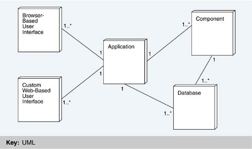
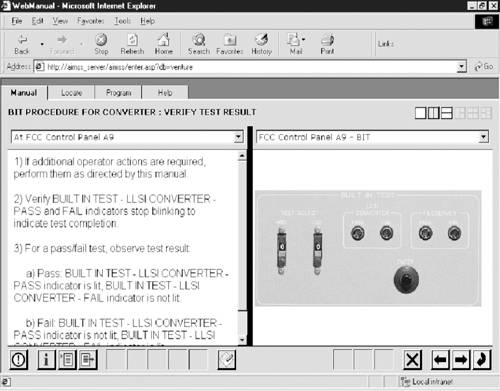
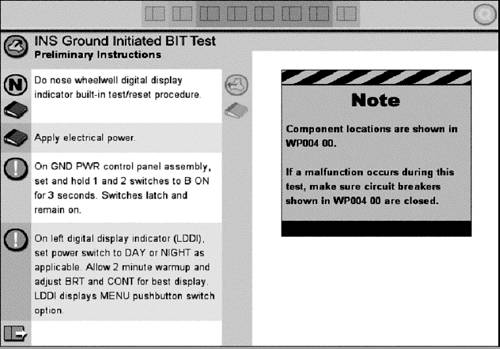
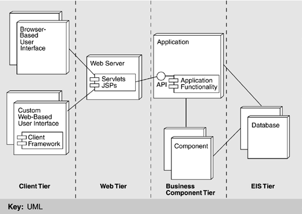
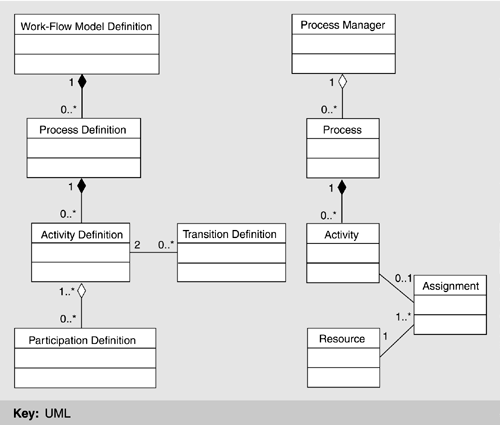
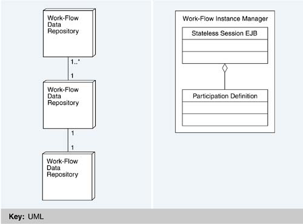

| [ Team LiB ] |
|
17.3 Architectural SolutionThe main architectural decision made in response to requirements was that Luther would be constructed on top of J2EE, which has the following advantages:
Figure 17.3 shows how a Luther application interacts with its environment. (It does not show the J2EE elements; we will discuss the mapping of the application to J2EE shortly.) First, note the (n:1:m) relationship among user interfaces, applications, and what Inmedius calls "components," that is, building blocks for application functionality. A Luther application is thin; much of its business logic is assembled from existing components, and it is not tied to any specific user interface. Essentially, the application code contains these three things:
Figure 17.3. Deployment view of a Luther application The application does not have a main method; it has an application programming interface (API), which represents the features and functions available from the application to its user interfaces. The user interface is independent of the application. It may expose any subset of features appropriate for the target interface device. For instance, if a user interface is created for a device with a microphone and speaker but no display, it does not expose features of the application that require graphics. Now we turn to an in-depth discussion of the three main elements shown in Figure 17.3: the user interface (UI), the application, and the components. USER INTERFACEThe strategy for developing user interfaces in the Luther architecture is as follows. First, a combination of domain experts, cognitive psychologists, and graphic artists work with a client to understand the various workers' tasks and roles, the work environments, and the necessary interface characteristics of the desired access devices. Next, they craft the user experience based on these constraints, with the result being a storyboard, screen shots, and a prototype. The point is that the result of the design process must be a high-quality, high-fidelity user experience, as described before. This is essential, since the application is meant to augment the user's existing work procedures and be a natural extension of the work environment. Consequently, the task of developing the user experience is delegated to the people best suited for it—domain experts who understand the task and the work environment; cognitive psychologists who understand how people think, reason, and absorb information; and graphic artists who are skilled at presenting information in an effective and appealing manner. The next step is to take the output of the design process—the storyboard, screen shots, and prototype—and quickly convert this to a working user interface on real devices. Here, the architecture must support the integration of custom user experiences. Integration must be rapid, and it should enable creation of common portions and re-use of software to the greatest extent possible, all the while preserving the integrity and fidelity of the original user experience design. Turning a user experience design into a working user interface is complicated by many factors. First, a variety of client devices must be supported. This includes an assortment of mobile devices with varying screen sizes, operating systems, and input devices. A user interface that performs well on a desktop PC is severely limited by the smaller screen, less memory, and less functional support on a mobile device. Some mobile devices, for example, have no keyboard or mouse support, rendering user interfaces that require them useless. A second factor is the limitations introduced by technology. For instance, certain types of user interaction or information display are cumbersome over HTTP and may lead to poor performance. In the end, there may be multiple client devices and user interfaces for any given application. The software architecture must be flexible enough to deal with multiple clients that differ greatly from one another. In Figures 17.4 and 17.5, the two types of user interface implementation supported by Luther are shown—namely, browser-based clients (Figure 17.4) and custom, Web-based clients (Figure 17.5). Figure 17.6 refines the view given in Figure 17.3 and illustrates the structure of each type. Figure 17.4. Browser interface for maintenance procedure Figure 17.5. Custom Web-based user interface Figure 17.6. User interface as a C&C view overlaid onto a deployment view Browser-Based ClientsBrowser-based user interface clients correspond simply to browser-based clients in J2EE. They are not restricted to Web browsers, however, but equally support other forms of markup such as a Wireless Markup Language (WML) over a Wireless Application Protocol (WAP) for cellular phones. While the markup language is different in this case (i.e., WML), the same mechanisms for delivering the content can still be employed—that is, a combination of servlets and JavaServer Pages (JSPs). Browser-based clients use standardized methods for the exchange of information (i.e., commercial Web browsers on the client side, HTTP over TCP/IP as the network protocol, and JSPs and Java servlets on the server side), and use common data formats (i.e., hypertext documents and style sheets). To make the client thin, most of the presentation logic is implemented on the server, which increases the chance of creating an interface that is portable across browser vendors and versions. Browser-based clients are primarily intended for
Browsers were originally designed for desktop computers—making PCs their optimum target device—but today's mobile devices also support them. Certain restrictions limit the use of browser-based interfaces. In design, for instance, they do not always make the best use of valuable resources, such as the available screen real estate, and the browser model supports only limited types of user interactions built around the HTTP request/response cycle. Also, browser-based interfaces are not suitable for all mobile devices because no browsers exist for certain ones; when they do, they may lack support for essential features such as frames, graphics, and JavaScript. Custom Web-Based ClientsCustom Web-based user interfaces are more complex. This type is different from a custom client, which in J2EE is a standalone program that implements all of the presentation logic and uses the remote invocation method (RMI) over the Internet Inter-ORB Protocol (IIOP) to interact directly with the business logic (i.e., EJBs). A custom Web-based client is also a standalone program but, unlike a custom J2EE client, it uses HTTP to communicate with the server and interacts with Web-tier entities, such as servlets and JSPs, in the same way as a browser-based client does. Custom Web-based clients are written in a native development environment for a specific device or class of devices. Since the user interface is a standalone program, this gives the UI designers the most freedom in terms of user interactions that can be supported, and can lead to the best use of resources such as screen real estate. The downside is higher cost of development. The Luther architecture has tried to minimize the amount of native code that must be written to create a custom, Web-based client, with a client framework that supports interfaces of this type, as shown in Figure 17.6. Basically, the framework standardizes elements that are needed across applications, including session management, authentication, and support for creating and sequencing presentation logic on the client, the Web container, or both. In essence, the client is a thin, standalone program that creates and lays out the native UI widgets. It also implements a small portion of the presentation logic such as input validation and sorting of tabular displays. Just as with browser-based clients, the bulk of the presentation logic is implemented on the Web tier in components managed by the client framework. Custom, Web-based clients have advantages over other types of custom user interfaces. First, they are thin. In other words, compared to a fat client (i.e., a custom program where all of the presentation logic is implemented in the client tier), they are smaller, easier to maintain, and easier to port across devices. Second, they use HTTP to interact with the Web tier, unlike J2EE custom clients that use RMI over IIOP. This makes them more appropriate for non-Java implementations and simpler to implement over wireless networks. Creating a custom, native user interface for each application on each device is too costly, even for a small number of devices. This is avoided by sorting interface devices into classes by characteristics. For each device class, a high-fidelity interface is designed and implemented as described previously. The client framework eases the burden of implementing this interface across a device class. Likewise, by implementing a significant portion of the presentation logic in the Web tier, client devices in the same class can use this software and thus share a significant portion of their implementation. Finally, the client framework introduces features that allow a device to advertise its interface characteristics. This information is made available to the presentation logic on the Web tier so that small adaptations can be made to the content before it is delivered to the client. APPLICATIONSIn the Luther architecture, the application is responsible for uniting the system into a single functional entity and exposing an API for interacting with it. The user interfaces call into this API to provide these features to an end user. Applications reside between any number of user interfaces and any number of components. An application ties together m components and exposes the aggregated "application" functionality to n user interfaces. The applications are "user interface agnostic," meaning that they expose functionality that any user interface can use. Each interface can expose all or a subset of this functionality as appropriate. For example, a user interface running on a mobile client like a Windows CE device cannot expose the administrative features you would expect to find in a desktop version. The idea is to expose all functions that can be performed in the system; each user interface decides which of these functions to expose to the user and how to expose them. The requirement for rapid development and deployment leads to designing the application to be as thin as possible. This is achieved by delegating the bulk of the business work to components (discussed in the next section). The criterion for moving application code into a component is simple: Is the functionality re-usable? If so, it should be generalized (to increase re-usability) and implemented as a component. On the other hand, if a piece of functionality is not likely to be re-used, it is incorporated into the application. The essential elements of an application include the following:
These elements result from application of the "anticipate expected changes" tactic and the associated "separate user interface" tactic for modifiability. A new user interface can be created without changing the application layer or components at all. A new implementation of a component can be integrated into the system without affecting the application layer or the user interfaces. New functionality can be added to the system by incorporating another component, adding the necessary API methods to the application layer, and adding (or not) new features to each user interface to expose the new functions. COMPONENTSThe intention behind a component is that it represent an element for re-use. The strategy is therefore to create a library of components from which applications can be easily and quickly synthesized to create specialized solutions for customers. The library contains core components related to the client and server frameworks; domain-specific components for domains, such as maintenance, repair, and overhaul; and generalized capability (i.e., utility) components that applications might need to round out functionality, such as security, authorization, and user management. Inmedius's strategy is to evolve a large library of core, domain-specific, and generalized capability components for the Luther architecture framework and for specific customer domains. Application development therefore becomes an exercise in creating business logic that composes the necessary set of capability components into a customized solution for the customer. Crafting common components is a central theme in the construction of software product lines and represents an intense application of the "abstract common services" tactic for modifiability—in this case, the ability to produce new solutions. Component DesignThe strategy for designing components is to use design standards, wherever possible, for the component's API and behaviors. For example, the Inmedius work-flow component (described later) is an instantiation of the Workflow Management Coalition's specification for work-flow functionality and behavior. This design strategy allows Inmedius to replace its own components with any other vendor's components that adhere to the same capability specifications. It facilitates the expansion of the Inmedius component library to include such components. Capability PartitioningIt may be that the library does not contain a capability component required by a given application under development. A decision must be made as to whether to design and implement the capability as part of the application itself or as a new, re-usable component. The key design heuristic is whether the capability is a part of the application's business logic for this specific solution or an instance of a more general capability that might be used in other applications. Component PackagingAny application in Luther uses the J2EE environment and its services. Given this constraint, components in that environment can be packaged as EJBs; Java bean components; individual Java class libraries, applets, servlets, or some combinations of these. In other words, a component is not synomous with an EJB, but rather can be packaged in a variety of ways. The strategy for packaging a given capability depends on the J2EE services used as well as the tradeoffs among a number of key factors (e.g., frequency of inter-object communication, location of object instances, and need for J2EE services such as transactions and persistence of object state over multiple user sessions). For example, communication with an EJB is via RMI, a heavyweight communication mechanism. In some J2EE containers, communication with EJBs is optimized (into local method calls) if the communication is within the same Java Virtual Machine (JVM). However, since optimization is not required of a J2EE container, communication between EJBs always has the potential of being costly, so must not be taken lightly if performance is an issue. An alternative is to create a Java class library to avoid the need (and overhead) for RMI. However, this also forces the component to take on additional responsibilities previously handled by the container, such as creation and deletion of component instances. Objects associated with a component must be made accessible to a user for the extent of a session. They may change during that time but the data must persist and be consistent across sessions. Consequently, components often require transactions. Multiple users may be accessing the same objects simultaneously, potentially for the same purpose, and this has to be handled gracefully. Supporting transactions also makes graceful recovery from failure easier by leaving the database in a consistent state. As described in Chapter 16, the EJBs model supports several bean types, including entity beans, session beans, and stateless session beans. The different types are intended to support different forms of business logic, and they are handled differently by the container. For instance, an entity bean allows the choice of managing persistence yourself via callbacks supported by the container (i.e., bean-managed persistence) or having the container do it for you (i.e., container-managed persistence). In either case, a significant amount of overhead is involved, which limits the practical use of an entity bean to long-lived business entities characterized by coarse-grained data accesses. What the J2EE Container ProvidesThere are several capabilities that applications require, such as transaction support, security, and load balancing. These capabilities are very complex (indeed, many corporations organize their entire business around offering them) and are outside the scope of a given application or application domain. One of the main drivers in Inmedius's decision to build Luther using J2EE was the fact that commercially available J2EE-compliant containers provide these features, so Inmedius does not have to implement them. Many of these capabilities can be configured for an individual EJB at application deployment time, or they are provided to the EJB transparently by the J2EE container. In either case, the EJB developer does not have to embed calls to them directly into the code, so they can be easily configured for a given customer. This not only facilitates the creation of application-independent EJB components but also guarantees that the components will successfully run within all J2EE- compliant containers.
What the Component Developer ProvidesThe component developer provides the client view, or API, of the component, as well as the component implementation. With a simple EJB, this amounts to writing only three classes: the home interface, the remote interface, and the implementation class. The component developer also provides definitions of the data types exposed to clients through the API. These are implemented as additional classes, and often take the form of value objects that are passed back and forth to an EJB through the API. EXAMPLE OF A RE-USABLE COMPONENT: WORK FLOWIn this section, we will look at one of the re-usable capability components developed for the Inmedius component library, the issues it raised, and the decisions made. The work-flow component, the largest of the capability components thus far created, is an example of the how a generalized capability is engineered and packaged for inclusion in the Luther architecture. Design RationaleThe primary responsibility of the work-flow component is to allow a client to model a work flow and then move digital artifacts through it. The component must also allow clients to define resources and assign them to work-flow activities. Naturally, the component must be highly re-usable and extendable, which means that it should provide general work-flow capabilities; provide a clear but generic model of operation to the applications that will use it; and be agnostic with respect to the digital artifacts that may move through a particular work-flow instance. The creation of a full-functionality work-flow component requires complex idioms such as branching, merging, and looping. Generally implementing a work-flow capability is a very large, complex task. Inmedius faced a dilemma in that there was a legitimate need for work-flow capabilities in its applications but many factors, such as the following, prevented their complete implementation:
The long-term solution was to form alliances with organizations that provide componentized work-flow capability for J2EE applications. Until that happened, however, Inmedius had to implement a subset of capability in order to deploy solutions. Thus, the strategy was to design a component that could be easily swapped with a more complete one from another organization at a later time. This created the need for a standardized work-flow component interface. Notice how the ABC works in this case. The design of the Luther architecture opened up a new business opportunity (work-flow management) and Inmedius had to make an explicit business decision to enter this market. Inmedius decided that it was outside its core competence. The Workflow Management Coalition has developed of a set of functional and behavioral work-flow specifications that have been recognized by the work-flow community. Inmedius architects built its component to those specifications, yet implemented only the functionality that is necessary for use by the current applications. This strategy leveraged the knowledge and experience of the work-flow community and all of its activities. The community had already defined business objects and relationships between objects, so Inmedius did not have to reinvent them. Second, by adhering to Workflow Management Coalition specifications, Inmedius could now replace its work-flow component with that of another vendor, with minimal effort if a customer required a certain degree of functionality not provided in the Inmedius component. Two Workflow Management Coalition specifications describe the two primary elements: the definition of a work-flow model and the representation of its runtime instances (see Figure 17.7). The work-flow model definition is made up of one or more process definitions, each of which consists of activity definitions and transitions between those activities and all participating resources. In each process definition, a process manager oversees all runtime instances of a specific process definition; each runtime instance maintains state as to which activities have been completed, which are active and who is assigned them, and context data that the work-flow component needs to make decisions while the process is active. Figure 17.7. Class diagram for the work-flow component One issue of concern to Inmedius was concurrency. Should more than one user be permitted to modify a work-flow model definition at one time? If active runtime instances exist, should a user be permitted to modify a work-flow model definition? Should a user be permitted to start a new work flow if its definition is being modified? Given the implementation, a yes answer to any of these questions posed a significant problem because of the relationship between a definition and its runtime instances. As a result, any solution would have to prohibit these situations from occurring. Because the underlying problem in each of the situations described before revolved around modifying the work-flow model definition, the solution was to associate a lock with it. In order to modify a definition, a user must obtain a lock. Only one lock can exist for a given definition and it cannot be obtained if the definition has any associated active runtime instances. In addition, a new runtime instance cannot be started if the work-flow model definition is locked. PackagingThe work-flow component is packaged as two EJBs: a stateless session bean for managing instances of work-flow model definitions and a single entity bean for managing the definition itself (see Figure 17.8). The decision to package the component this way was based strongly on the characteristics of the different EJBs. Figure 17.8. Work-flow component packaging diagram Entity EJBs implement abstractions in an application that represent shared resources, where persistent object data is shared among many components and users. The work-flow model definition represents just such a single shared resource—namely, a definition of a process that can be instantiated many times. In Inmedius applications, any user in any location can start a new process based on this single work-flow model definition and participate in its activities. Session EJBs model state and behavior. The definition of new work-flow models, the creation of work-flow model instances, the creation of activities, the assignment of resources to activities, and the completion of activities, for example, are all services provided to users over the course of a work-flow instance life cycle or session. Therefore, work-flow instances are most naturally implemented by session EJBs. Once it was decided to make the work-flow instance manager a session EJB, a decision had to be made as to whether to make the session EJB stateful or stateless. This depended on the characteristics of the state to be maintained. Typically, a stateful session EJB maintains state for a single client with whom it is having a dialog. However, the state of a runtime work-flow instance is not manipulated by just a single client but is updated by many clients, including those who participate in the actual work-flow process and managers who want to monitor the process and analyze its results. As a result, the work-flow instance manager was implemented as a stateless session EJB, which is more lightweight and scalable than a stateful session EJB and which persists the state in a database on behalf of a given client, where all the other clients have access to it. Another design tradeoff concerned how to package the individual objects within a work-flow model definition. Should they be packaged as entity EJBs, or should they comprise Java classes packaged using some other structure, such as a library? Because these objects interact with and are dependent on each other, to package them as entity EJBs would constantly require locating and retaining multiple EJB handles in the application, creating much overhead. In addition, recall that any method invocation on an EJB is essentially an RMI call and can be quite costly. While most J2EE containers can determine if the method invocation is in the same Java Virtual Machine and therefore optimize it into a local method call, this is not guaranteed. For these reasons, the design decision was to create entity EJBs for coarse-grained abstractions in the application, such as the work-flow model definition, and to implement the finer-grained abstractions in the entity EJB itself as libraries of Java classes—all to reduce the overhead associated with the heavyweight entity EJB relationships. An example of this type of design decision in the work-flow component was deciding where to locate the logic that determines whether to grant a request for a lock on the work-flow model definition. Originally, that logic was placed inside the entity EJB implementing the work-flow model definition. A request to lock the definition would be made directly to the entity EJB, which would determine if the lock could be granted (and, if so, lock it). A problem became apparent when it came time to enhance the business logic so that a lock could be granted only if no active runtime work-flow instances existed. The methods that provided runtime work-flow instance information were defined on the stateless session EJB, the object interacting with the entity EJB. It did not seem right to pass a reference to the stateless session EJB into the entity EJB—first, because the entity EJB would be aware of the environment in which it exists (thus, hampering re-use); second, because any method invocations made by the entity EJB on the stateless session EJB would be RMI calls. Another option was to use the data access objects of the entity EJB directly in order to retrieve the necessary information from the database. However, this would break the abstraction implemented by the entity EJB, forcing it to be responsible for something that it should not be responsible for and that is already the responsibility of another object. Lastly, there would be a duplication of code that would create maintainability problems. The solution was to place the logic (i.e., that determines whether a request for a lock on the work-flow model definition is granted) in the stateless session EJB. The entity EJB now simply knows how to persist and retrieve locks to and from the database. When a request for a lock is received, the stateless session EJB determines if it can be granted and, if so, instructs the entity EJB to lock the work-flow model definition. This solution maintains the integrity of the abstractions implemented by the objects and eliminates unnecessary inter-EJB relationships. Distributed and Detached OperationsWhen designing the component to support distributed and detached operations, a number of interesting issues arose, primarily about whether to support distributed concurrency of work-flow activities. Consider a scenario in which a work-flow model definition and its runtime instances are located across multiple servers. While J2EE transaction support can guarantee that no two users can violate work-flow rules if they access the same data in the same database, it cannot guarantee that rules will not be violated if two users access replicated data for the same work flow in different databases. In this scenario, one user could lock a work-flow model definition in one location for the purpose of modifying it while another user was creating a new runtime instance of the same definition in another location. During data replication and synchronization among the distributed servers, conflicts might arise that could corrupt the work-flow data in the enterprise environment if not resolvable. To guarantee that work-flow rules would not be violated across multiple databases, additional functionality would be needed to resolve every type of conflict. Implementing this level of functionality was outside the scope of Inmedius's initial release. To meet the requirement, distributed and detailed operation scenarios had to be supported. The system architecture and environment dictated the two scenarios of distributed and detached operations initially supported. In a distributed operation, a common repository is shared that itself supports transactions (e.g., a database). In other words, multiple instances of the application server may exist in several locations but each must access the same data repository that contains the work-flow model definitions and runtime instances. This is because the information used by the application server to determine whether work-flow rules have been violated is stored in the data repository. In detached operations, one installation (i.e., application server and data repository) is designated as the master installation and all others as subordinate instances. The work-flow model definition must be created and defined via the master and then replicated to all subordinates. Once a definition is distributed, it cannot change other than specifying who can participate in the defined activities. As runtime work-flow instances at the subordinate installations are created and eventually closed, these are replicated back to the master for historical purposes. RAMIFICATIONS OF USING J2EEThis section discusses the rationale for several Luther decisions regarding the use of J2EE. Decisions Made by Design versus Those Dictated by J2EEWhen designing a system using the J2EE runtime environment, some decisions are left up to the designer and others are constrained by the J2EE rules and structure. For example, J2EE mandates where servlets, JSPs, and EJBs reside within a container—servlets and JSPs in the Web tier and EJBs in the EJB tier. However, the Java 2 Enterprise Edition environment also provides the designer with some flexibility—for example, in implementing security (declarative versus programmatic), transaction support (declarative versus programmatic), and data access (container-managed versus bean-managed). When designing a component, the designer has total control over functionality to allocate to a servlet, JSP, or EJB, and here the obvious choices might not always be the best. For instance, one of Inmedius's components supports collaboration between two or more users. Since this component represents re-usable business logic, the rules of component selection specify that it should be packaged as an EJB. Unfortunately, further analysis proved that this was not the correct design. Additional factors must be considered when determining how to map a component design onto the four logical tiers provided by J2EE, as shown in Figure 16.2. Issues Introduced by the Multiple Tiers in the J2EEOne issue is performance. A major contributor to poor performance is the number of calls made from one J2EE entity (e.g., servlet, EJB) to another within a given transaction. Technically, each EJB method call is an RMI call, which can be very expensive. The implementation of coarse-grained EJBs and the elimination of inter-entity EJB relationships are two ways to address this issue and thereby ensure good component performance. Another issue is transactions, which may be managed programmatically or declaratively. Obviously, managing transactions declaratively is somewhat easier because code does not have to contain begin and end transaction statements. However, developers must be mindful of how their J2EE entity will be used. The easy course is to require transactions for all methods. Unfortunately, this creates unnec essary runtime overhead if transactions are not truly needed. Another problem arises when methods on a J2EE entity do not require transaction support and the deployment descriptor enforces this. If another container involved in a transaction uses the J2EE entity, the transaction it has created will fail. Instead, the deployment descriptor should declare that the method supports transactions. Careful thought must be given to what aspects of a component require transactions to ensure correct operation, and these decisions must be mapped to a combination of the declarative and programmatic mechanisms supported by J2EE. |
| [ Team LiB ] |
|